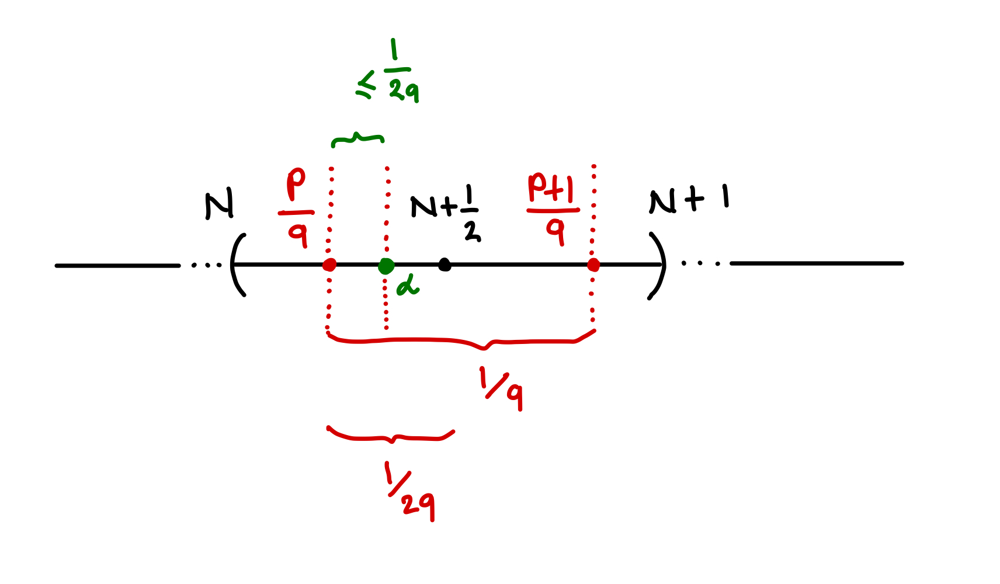
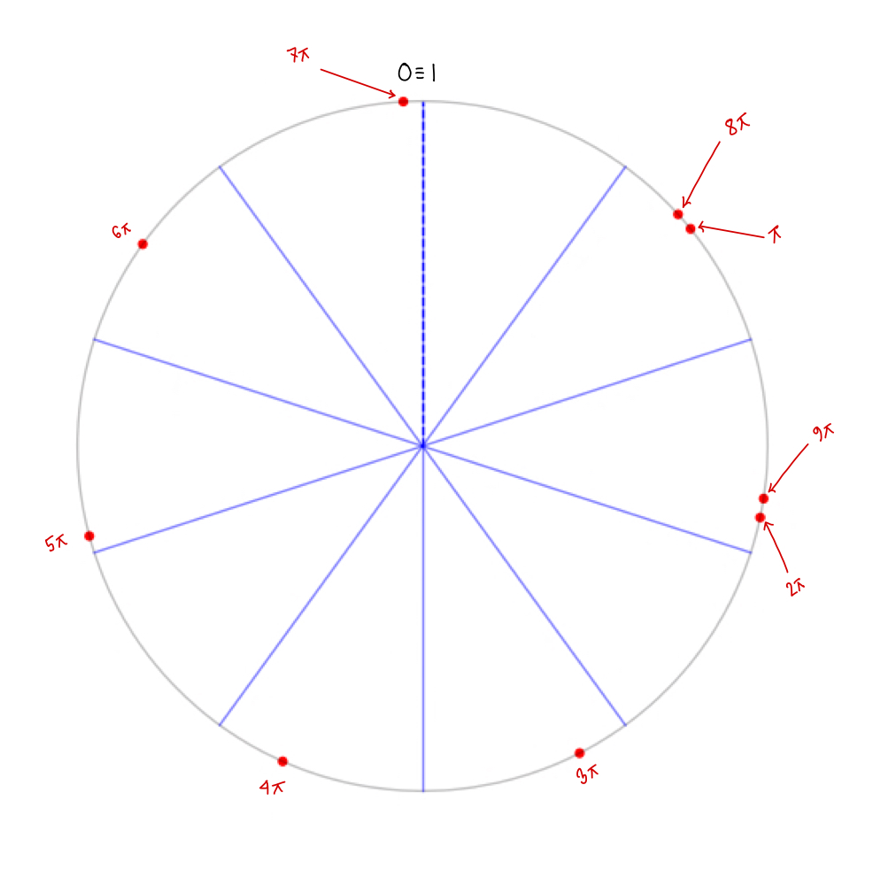

Hippasus of Metapontum was sentenced to death by drowning, for he ‘invented’ irrational numbers and thereby committed heresy against nature. Today, we’ll indulge in a similar sin.
\[\newcommand{\C}{\mathbb{C}} \newcommand{\N}{\mathbb{N}} \newcommand{\Q}{\mathbb{Q}} \newcommand{\R}{\mathbb{R}} \newcommand{\Z}{\mathbb{Z}} \newcommand{\img}{\mathrm{img}} \]
Dirichlet’s Approximation Theorem:
Let \(\alpha\) be an irrational number. Prove that for all \(\alpha\), there exists infinitely many \(p\) and \(q\) such that: \[0 < |\alpha - \frac{p}{q}| < \frac{1}{q^2}\]
The problem for today was on one of my real analysis homeworks, a few weeks after we started measure theory. On this part of the post, I’ll discuss the general version of the theorem, give the proof of the case when \(\alpha\) is irrational 1, and try to illustrate a cool geometric idea lying underneath its surface.
The Dirichlet’s Approximation Theorem is a fundamental result in Diophantine approximation (Wikipedia contributors 2023). It says that any real number has a sequence of ‘good’ rational approximations. You might be wondering why is it surprising given that we can always find a rational approximation of any real number. That is: given \(\epsilon>0\) and real number \(\alpha\), we can find rational number \(r\) which is at least \(\epsilon\) close to \(\alpha\)2: \[|\alpha - r| < \epsilon\] However, as we will soon find out, ‘good’ has a special meaning for us: it’s what makes the theorem profoundly beautiful.
Motivating the problem
Let’s think more broadly. Say you are given the real number3 , \(\alpha = \frac{4}{5}\). Can you produce a “sequence” of rational numbers that get arbitrarily close to \(\alpha\). To put it in mathematical terms, find the sequence \[ \{r_n\}_{n=1}^{\infty} = \{\frac{p}{q}: \text{ where $p,q$ are integers}\} \] such that: \[ \lim_{n \to \infty}| \alpha- r_n| = 0 \] What’s the most simple thing one could do to find such a sequence? Let’s start by choosing a random number say \(\frac{1}{2}\) and then decrease the distance between \(\alpha\) and \(\frac{1}{2}\) by half at each step: \[ r_1 = \frac{1}{2},~ r_2 = \frac{13}{20},~ r_3 = \frac{29}{40}, r_4 = \frac{61}{80} \cdots, r_n = \frac{4}{5} - \frac{3}{10 \cdot 2^{n-1}} \] Your local numerical analyst might say that the sequence linearly converges to \(\frac{4}{5}\) with with a rate \(\frac{1}{2}\). At this point, you might be asking yourself: “why do we care about rational approximations exclusively?” One of the reasons is to facilitate computer storage of numbers with minimal error. For practical purposes, it’s much more efficient to store \(\pi\) as \(\frac{22}{7}\) or \(\frac{355}{113}\) with some estimate of the error (\(|\pi - \frac{22}{7}|< \epsilon\) for some \(\epsilon>0\)) than storing say the first \(100\) decimal points (that’ll be a computational heresy).
Hence, naively, ‘good’ approximation for any \(\alpha\) comes down to (1) finding a pair of integers \(p,q\) with (2) ‘small’ \(|\alpha - \frac{p}{q}|\). But there’s a major setback to this approach: the universal law of diminishing returns 4. As we get closer and closer to \(\alpha\), the sizes of \(p\) and \(q\) also increases. In case of the example from above: \[r_9 = \frac{409}{512}, ~ r_{19}= \frac{2097149}{2621440}, ~ r_{29} = \frac{429496729}{536870912}, ~ r_{39} = \frac{2199023255549}{2748779069440}\] Dirichlet’s approximation theorem tells you the cost of a better approximation: how big your \(q\) needs to be, in order to get \(\frac{1}{q^2}\) close to \(\alpha\).
Like any theorem, we’ll see if we can come up with our own version of it. The first question you might ask is how would one ‘measure’ the supposed trade off between precision of the approximation and the sizes of the integers approximating it. That is, if we have that \[ |\alpha - \frac{p}{q}| < \epsilon \label{ineq0} \tag{0} \] what relationship can we draw between \(p,q\) and \(\epsilon\).
Because of density of \(\Q\), in \(\R\), we have the following well-known fact from number theory: given \(\alpha \in \R\) there exists \(p, q\in \Z\) such that \[ 0 \leq \alpha - \frac{p}{q} \leq 1 \label{ineq1} \tag{1} \] Intuitively, this follows from the fact that any real number is bounded by its closest integers. Let’s only focus on the upper bound: \[\begin{aligned} \alpha &\leq \frac{p+q}{q}\\ &\leq \frac{p+1}{q} \end{aligned}\]
Combining with \(\ref{ineq1}\), we get that \[ \frac{p}{q} \leq \alpha \leq \frac{p+1}{q} \]

Moreover, as demonstrated in Figure 1, \(\alpha\) is either closer to \(\frac{p}{q}\) or \(\frac{p+1}{q}\) and hence at most \(\frac{1}{2q}\) away from either. Without loss of generality (WLOG), assume the former. Then: \[|\alpha - \frac{p}{q}|\leq \frac{1}{2q}\]
That’s it: we have now established a simple relationship between the \(p,q\) and \(\epsilon\) from \(\ref{ineq0}\). Simply put, it tells you that cost of getting \(\frac{1}{2 \cdot 500}\) close to \(\alpha\) is having a denominator as big as \({500}\). Dirichlet’s approximations theorem is a huge improvement of this estimate.
The Proof
In efforts to show a slightly broader result, we’ll prove that there are infinitely many distinct \(p\)’s and \(q\)’s such that \[0<|qx - p| < \frac{1}{N} < \frac{1}{q}\] where \(0< q < N\) and \(p\) and \(q\) are co-prime. What this means is that given \(N-1\) choices for \(q\), we need to find \(p\)’s such that the inequality is satisfied. So to give it our best try, let’s find \(N-1\) many integer approximations of \(qx\) where \(p,q\) are co-prime, that is: \[ 0<|qx-p_i|<1 \label{ineq4} \tag{4} \] For example, let \(x = \pi\) and check that the following list indeed satisfies the inequality \(\ref{ineq4}\): \[ |\pi - 3|, |2\pi-7|, |3\pi - 10|, \cdots, |(N-1)\cdot \pi-p_{N-1}|\]
So for each \(q \in \{1, \cdots, N-1\}\) we get the list of inequalities of the form: \[0<|qx - p_i|<1 \text{ where } i \in \{1, \cdots, N-1\} \] Now, one observes that \(|qx-p_i|\) are really just fractions for each \(i\) and we have \(N-1\) of these fractions 5. But most importantly, we know none of these fractions are equal to each other because \(qx\) is irrational 6. To see why, say we have \[2x - p_2 = 3x - p_3\] Then, it’d imply that \(x = p_3 - p_2\), which is sinful because we know irrational numbers cannot be expressed in terms of integers. So we have \(N+1\) many real numbers \(0,1, \cdots, (N-1)x-p_{N-1}\) who live in the unit interval (if not, where else would fractions live?) Again, none of these numbers are equal to each other. But, if we partition \([0,1]\) with each partition having the length \(1/N\), we get \(N\) many partitions (for \(N+1\) numbers). By pigeonhole principle (Wikipedia Contributors 2023), we know that at least 2 of these numbers must be within the same partition. That is: \[|(q-q')x + (p'-p)| < \frac{1}{N}\]
Therefore, for infinitely many choices of \(N>0\), we get infinitely many integers \((q-q')\) and \((p-p')\).
Now that we have seen the proof, let’s look at the beautiful geometry behind it (Ofir David 2016). Those of you who know abstract algebra, might recall that \(\R / \Z\) represents the unit circle where \(0\) and \(1\) belong to the same coset. If you don’t, think of each point on the unit circle as a representation of any real number by a number between \(0\) and \(1\). Try to convince yourself that any real number is just a point on this unit circle up-to translation by an integer. With that in mind, say we want to approximate \(\pi\) with at most \(\frac{1}{10}\) error: \[ |q\pi-p| < \frac{1}{N} \label{ineq5} \tag{5} \]
Let’s follow the steps like before: find \(p,q\) which satisfy \(\ref{ineq5}\) and are co-prime: \[ |\pi - 3|, |2\pi-7|, |3\pi - 10|, |4\pi-13|, |5\pi - 16|, |6\pi - 19|, |7\pi - 22|, |8\pi - 25|, |9\pi-28|\]
And we get roughly get the following corresponding values: \[0.142,~ 0.717,~ 0.575,~ 0.434,~ 0.292,~ 0.15,~ 0.009,~ 0.133,~ 0.274\]
Let’s plot them on a circle:

Just like we proved, at least one interval (in our case, two) has two points. I’ll leave it to you to figure out how to parametrize the circle in order to accommodate any number of the form \(qx\) where \(x\) is irrational and see if you can ever ‘touch the dashed line’.
References
Footnotes
The rational case is straightforward.↩︎
This follows from the fact that rational numbers are dense in the real numbers.↩︎
This follows from the fact that rational numbers are dense in the real numbers.↩︎
Profits or benefits gained from something gradually represents a proportionally smaller gain as more resources are invested.↩︎
A geometric interpretation of this fact will be presented later in the article.↩︎
Check this for the example above.↩︎